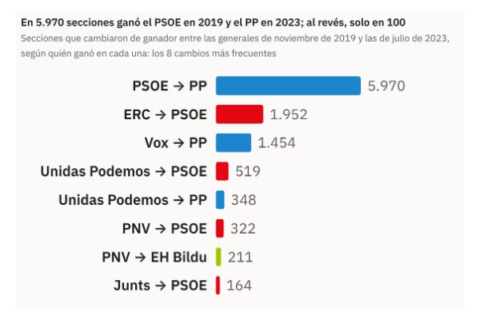
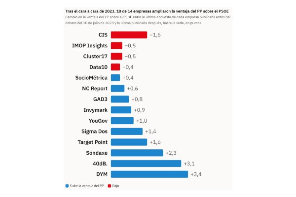
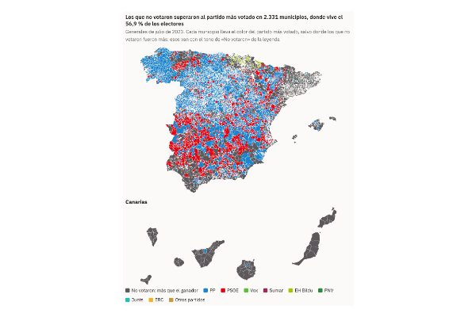
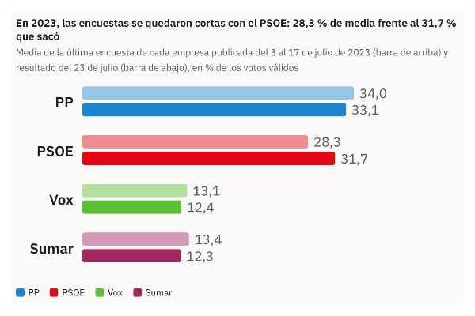

Actualidad · Lo que las encuestas no dicen · España
Elecciones generales: las encuestas dan al PSOE entre el 25,5 y el 33,3 %
Las 18 encuestadoras de las últimas tres semanas casi coinciden en Vox. En el PSOE y en Sumar se separan más de lo que explicaría el azar.
Por Nacho G. del Álamo ·
Cada párrafo lleva una etiqueta: dato (cifra comprobable con las fuentes), patrón (relación que se repite, sin afirmar la causa), hipótesis (explicación posible, sin dos fuentes independientes) o contexto (hechos y declaraciones publicados por otros, enlazados). Cómo verificamos
ContextoLas encuestas de las elecciones generales del 29N no dicen lo mismo, y una cifra resumen lo esconde. Hemos tomado las 18 encuestadoras que han terminado trabajo de campo en los últimos 21 días, la misma selección que usa la mediana de nuestra página de encuestas, y hemos mirado cuánto se separan entre ellas.
DatoDonde más discrepan es en el PSOE: del 25,5 % de Data10 al 33,3 % del CIS. Sin el CIS, el abanico sigue siendo de 6,4 puntos, del 25,5 al 31,9 % de SW Demoscopia. En el PP, sin el CIS, van del 29,1 % de SW Demoscopia al 33,1 % de DYM. En Vox casi coinciden: todas lo ponen entre el 16,5 y el 20,4 %.
Ver la tabla
| Encuestadora | Medio | Fin del campo | PP | PSOE | Vox | Sumar |
|---|---|---|---|---|---|---|
| DYM | 2026-11-06 | 33,1 | 27,3 | 18,6 | 5,6 | |
| InvyMark | laSexta | 2026-11-09 | 32,2 | 28,2 | 19,1 | 6,4 |
| NC Report | La Razón | 2026-11-12 | 32,1 | 26,1 | 19,0 | 7,6 |
| GAD3 | Vocento | 2026-11-05 | 31,9 | 25,9 | 18,6 | 7,5 |
| 40dB. | El País / Cadena SER | 2026-11-16 | 31,8 | 30,6 | 17,5 | 5,4 |
| Data10 | OKDiario | 2026-11-12 | 31,7 | 25,5 | 20,4 | 6,7 |
| SocioMétrica | El Español | 2026-11-15 | 31,6 | 27,8 | 19,1 | 6,0 |
| IMOP Insights | El Confidencial | 2026-11-13 | 31,5 | 26,9 | 19,0 | 6,9 |
| Ateneo del Dato | elDiario.es | 2026-11-05 | 31,5 | 28,6 | 18,6 | 6,1 |
| Celeste-Tel | Onda Cero | 2026-11-03 | 31,4 | 25,7 | 19,2 | 8,0 |
| Winston | Artículo14 | 2026-11-08 | 31,1 | 26,4 | 18,7 | 8,4 |
| EM-Analytics | Electomanía | 2026-11-16 | 30,8 | 27,0 | 18,8 | 7,7 |
| Sigma Dos | El Mundo | 2026-11-16 | 30,7 | 26,4 | 19,8 | 6,7 |
| Target Point | El Debate | 2026-11-12 | 30,6 | 27,0 | 18,7 | 7,3 |
| Sondaxe | La Voz de Galicia | 2026-11-15 | 29,7 | 26,7 | 18,0 | 7,7 |
| YouGov | Ara | 2026-11-02 | 29,6 | 25,9 | 20,3 | 9,2 |
| SW Demoscopia | La Séptima | 2026-11-16 | 29,1 | 31,9 | 16,5 | 7,3 |
| CIS | 2026-10-30 | 25,5 | 33,3 | 18,4 | 6,9 |
DatoEso cambia quién gana. 16 de las 18 encuestadoras dan más votos al PP que al PSOE. La ventaja del PP va de +6,2 puntos en Data10 a −2,8 en SW Demoscopia, que pone delante al PSOE, igual que el CIS (−7,8).
PatrónToda encuesta tiene un margen de error, y dos encuestas bien hechas pueden diferir solo por azar. En el PP y en Vox, sin contar el CIS, las encuestadoras no se separan más de lo que daría ese azar: sus diferencias son 0,8 y 0,9 veces lo que explicaría el tamaño de sus muestras. En el PSOE son 1,5 veces, y en Sumar, 1,5. Ahí ya no es solo la muestra.
Ver la tabla
| Partido | Mínimo | Máximo | Desviación real | Por azar | Real / azar |
|---|---|---|---|---|---|
| PP | 29,1 (SW Demoscopia) | 33,1 (DYM) | 1,0 | 1,2 | 0,8 |
| PSOE | 25,5 (Data10) | 31,9 (SW Demoscopia) | 1,7 | 1,2 | 1,5 |
| Vox | 16,5 (SW Demoscopia) | 20,4 (Data10) | 0,9 | 1,0 | 0,9 |
| Sumar | 5,4 (40dB.) | 9,2 (YouGov) | 1,0 | 0,7 | 1,5 |
ContextoLo que separa a unas de otras no es solo la muestra. Cada encuestadora decide a quién entrevista, por teléfono o por internet, y cómo pasa de las respuestas a una estimación de voto. Tampoco preguntaron a la vez: cada una terminó su trabajo de campo un día distinto de estas tres semanas, y algunas acumulan entrevistas de antes, como SW Demoscopia, desde el 26 de octubre, y SocioMétrica, desde el 1 de septiembre. En Sumar pesa también qué se cuenta: 40dB, por ejemplo, publica aparte a Frente Amplio y a Compromís, Ara Més y Unidad del Pueblo Canario, y aquí se suman, como en las demás.
ContextoUna cifra sola no dice cuál acierta. En 2023, las últimas encuestas exageraron la ventaja del PP. Por eso en nuestra página de encuestas enseñamos la mediana, que no se mueve por una encuesta que se sale del grupo, y la tabla con cada una.
Preguntas frecuentes
¿En qué partido discrepan más las encuestas de las elecciones generales?
En el PSOE: va del 25,5 al 33,3 % según la encuestadora, y sin el CIS, del 25,5 al 31,9 %. En Vox, todas están entre el 16,5 y el 20,4 %.
¿Cuántas encuestas dan ganador al PP?
16 de las 18 encuestadoras con trabajo de campo en los últimos 21 días dan más votos al PP que al PSOE.
Lo que las encuestas no dicen · Las encuestas de las elecciones generales del 29N
Método y fuentes
- Qué se compara
- La última encuesta de cada encuestadora con trabajo de campo terminado en los 21 días anteriores al 18 de noviembre, la misma selección que la mediana de mapaelectoral.es/encuestas: el mínimo y el máximo de cada partido y cuánto se separan entre ellas frente a lo que daría solo el tamaño de sus muestras.
- Límites
- Una encuesta no es una previsión, y la que más se aleja de las demás no tiene por qué ser la que falla. La comparación con el azar es aproximada: usa las entrevistas declaradas con un tope de 3.000 (cuatro encuestadoras declaran más, y con su muestra completa el azar sería menor) y 1.000 si no se publican, y el error real de una encuesta ponderada es algo mayor que el teórico, así que parte de la diferencia puede ser azar. Las encuestas no se hicieron a la vez: cada una terminó el campo un día distinto de estas tres semanas, y SW Demoscopia y SocioMétrica acumulan entrevistas de antes. Se hace sin el CIS, que tiene un método propio y 45.000 entrevistas. En Sumar se suman Frente Amplio, Compromís, Ara Més y Unidad del Pueblo Canario cuando la encuestadora los da por separado.
- Cómo se calcula
- Encuestas: última de cada encuestadora con trabajo de campo terminado en los 21 días anteriores, sin reestimaciones (encuestas/src/construir.py). Azar: raíz de la media de p·(1 − p)/n, con p la media de las encuestadoras y n sus entrevistas, con un mínimo de 500 y un tope de 3.000. Real: desviación típica entre encuestadoras. Script: actualidad/src/resumenes/encuestas_discrepan.py. Cifras reproducibles con los scripts del expediente de la pieza. Metodología de Actualidad · Metodología del Atlas
- Fuentes
- Autoría
- Nacho G. del Álamo
- Revisión de datos y texto
- Nacho G. del Álamo, 18 de noviembre de 2026
- Publicado · actualizado
- 18 de noviembre de 2026 · 18 de noviembre de 2026
- Correcciones
- Ninguna.
Serie «Camino al 29N»: 158 piezas
- El mapa electoral de Navarra: juntos, UPN y PP ganaron en 106 municipios en 2019; separados, en 32, y el 29N vuelven a ir juntos
- El CIS preelectoral da al PSOE 7,8 puntos de ventaja; la media de las demás encuestas, 3,6 al PP
- El mapa electoral de Cantabria: sin el PRC en la papeleta, el PP pasó de 55 a 85 municipios y ganó El Astillero por 5 votos
- El mapa electoral de La Rioja: el PP pasó de 108 a 138 municipios y ganó Logroño por 6.822 votos; con las encuestas, Vox le quitaría un diputado al PSOE
- El mapa electoral de Ceuta y Melilla: Vox pasó de ganar 32 secciones de Ceuta a ninguna, y 13 de las 17 de Coalición por Melilla fueron al PSOE
- Los once municipios que visitan los candidatos el primer día de campaña, fuera de Madrid y Barcelona, cambiaron de ganador entre 2019 y 2023
- Dos de los cuatro del debate de laSexta no se presentan el 29N: ni Cuerpo ni Bustinduy están en ninguna lista
- El CIS da al PSOE más escaños que la media de encuestas en 13 provincias y menos en ninguna; en Madrid, entre 12 y 14 frente a 10
- A dos semanas del 29N, 14 de las 16 encuestas con escaños dan mayoría absoluta a PP y Vox; solo el CIS y SW Demoscopia ponen por delante al PSOE
- De los 25 convocados de De la Fuente nacidos en España, 15 nacieron donde ganó el PSOE en 2023 y 8 donde ganó el PP; en Puente Genil, el PP ganó por 31 votos
- Vox, primero en el CIS entre los de 18 a 24 años: la generación de 2008 estrena voto en unas generales
- El PSOE sube en siete de las nueve encuestas de la primera semana de campaña; el PP baja en cuatro y sube en otras cuatro
- Feijóo hace campaña con UPN en Pamplona, donde el PSOE ganó 77 de las 151 secciones en 2023; con UPN y PP sumados, se habría quedado en 49
- Al PP le faltaron 9.793 votos en 2023 para recuperar un diputado en Gipuzkoa; Feijóo arropa hoy a su candidato, atacado en Hernani
- En 2023, las últimas encuestas daban al PP 5,7 puntos de ventaja sobre el PSOE y ganó por 1,4: si hoy fallaran igual, el PSOE iría primero
- Si la abstención fuera un partido, en 2023 habría quedado por delante del ganador en más de la mitad de las grandes ciudades y en la mitad de las secciones de España
- Voto por correo para las elecciones generales del 29N: el plazo para pedirlo acaba el jueves 19; en 2023, una de cada tres solicitudes llegó en las dos últimas semanas
- Encuestas y debate: tras el cara a cara de 2023, 10 de 14 encuestadoras ampliaron la ventaja del PP; trece días después ganó por 1,4 puntos
- Elecciones generales: una de cada tres secciones cambió de ganador entre 2019 y 2023
- Estás aquíElecciones generales: las encuestas dan al PSOE entre el 25,5 y el 33,3 %
- Ver las 158 piezas de la serie
Más datos: elecciones generales del 29N de 2026: fecha y escaños por provincia · resultados de las elecciones generales 2026 (29N) y los de 2023 · dónde y cómo votar el 29N: colegio electoral, voto por correo y plazos.
Sigue leyendo

El mapa que nadie te enseñaElecciones generales: una de cada tres secciones cambió de ganador entre 2019 y 2023
El debateEncuestas y debate: tras el cara a cara de 2023, 10 de 14 encuestadoras ampliaron la ventaja del PP; trece días después ganó por 1,4 puntos Voto por correoVoto por correo para las elecciones generales del 29N: el plazo para pedirlo acaba el jueves 19; en 2023, una de cada tres solicitudes llegó en las dos últimas semanas
Voto por correoVoto por correo para las elecciones generales del 29N: el plazo para pedirlo acaba el jueves 19; en 2023, una de cada tres solicitudes llegó en las dos últimas semanas
El mapa que nadie te enseñaSi la abstención fuera un partido, en 2023 habría quedado por delante del ganador en más de la mitad de las grandes ciudades y en la mitad de las secciones de España
Lo que las encuestas no dicenEn 2023, las últimas encuestas daban al PP 5,7 puntos de ventaja sobre el PSOE y ganó por 1,4: si hoy fallaran igual, el PSOE iría primero Feijóo en GipuzkoaAl PP le faltaron 9.793 votos en 2023 para recuperar un diputado en Gipuzkoa; Feijóo arropa hoy a su candidato, atacado en Hernani
Feijóo en GipuzkoaAl PP le faltaron 9.793 votos en 2023 para recuperar un diputado en Gipuzkoa; Feijóo arropa hoy a su candidato, atacado en Hernani